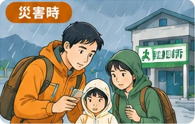

想いをつなぐ
子どもから高齢者まで、多くの人が直感的に使え、 ふだんの生活でも使える防災アプリを目指して開発を始めました。

子どもから高齢者まで、多くの人が直感的に使え、 ふだんの生活でも使える防災アプリを目指して開発を始めました。
避難するときの注意点や過去の災害からの教訓を知り、 これからの行動に生かしてもらいたいと考えました。
災害時には通信が不安定になることもあるため、 必要な情報をできるだけオフラインでも利用できるようにしています。
11月24日に報道された防災国家戦略案では、産官学民が連携した災害対応や先端技術の活用が掲げられています。つなぐ防災では、その実現を支える基盤として、国が主導する防災関連オープンデータの全国共通化を提言します。
つなぐ防災では、全国の緊急避難場所、医療機関、学校、公衆トイレ、給水スポットなどの情報を整備し、通信が途絶えても利用できる防災アプリを開発しています。公衆トイレについては、行政等の公開情報とOpenStreetMapを活用し、約4万7千件の情報を整備してきました。
自治体によって公開形式や項目が異なり、位置情報や利用条件が不足する場合もあります。各サービスの開発者が個別に収集、変換、検証を行う必要があり、同様の作業が繰り返されることは社会全体の負担になります。
全国のデータ整備の実績
46,784 件全国の公衆トイレ情報（2026年11月時点）
公式データ 23,222件（49.6%）
OpenStreetMap 23,562件（50.4%）
複数の情報源を組み合わせることで、情報を補完できます。
共通仕様があれば、提供者ごとの情報を多様なサービスで活用できます。
※ 共通仕様による連携の構想図です。データの一元管理を前提とするものではありません。
ACTION
既存の標準仕様を活用・拡充し、施設名称、識別子、所在地、緯度経度、施設種別、利用条件などの基本項目を共通化する。
自治体だけでなく民間企業や地域団体も、公開可能な施設・サービス情報を共通仕様で提供できる仕組みを整える。
出典、更新日、確認状況、利用条件やライセンスを明示し、平常時の施設情報と災害時の開設・稼働状況を区別する。
入力・変換・検証・更新を支援する共通ツールを整備し、既存の業務やデータを生かせるようにする。
機械判読可能な形式と明確な利用条件で提供し、一括取得やオフライン利用も考慮する。企業、研究機関、自治体、個人開発者が活用できる環境を整える。
トイレ・給水・医療機関など、日常の施設検索に。

避難や行動支援に。開設・稼働状況も重要な情報に。
公衆トイレ、給水スポット、医療機関、店舗など、日常生活を支える情報も災害時の行動支援に役立つ可能性があります。ただし、平常時に利用できる施設が災害時にも利用できるとは限らないため、その違いを明確に伝えることが重要です。
特定のサービスに依存せず、誰もが防災サービスを生み出せる共通の土台を。
特定のアプリや企業に依存するのではなく、さまざまな人が技術やアイデアを生かし、防災サービスを生み出せる共通の土台を目指します。データ提供者と利用者双方の負担を減らし、日常生活と災害時の安全・安心につながる情報基盤を官民で育てることを期待します。
つなぐ防災としても、データ整備を通じて得た知見の共有や意見交換に協力していきたいと考えています。